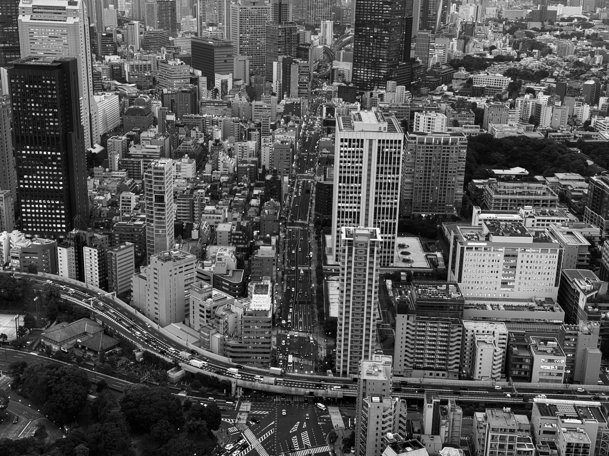
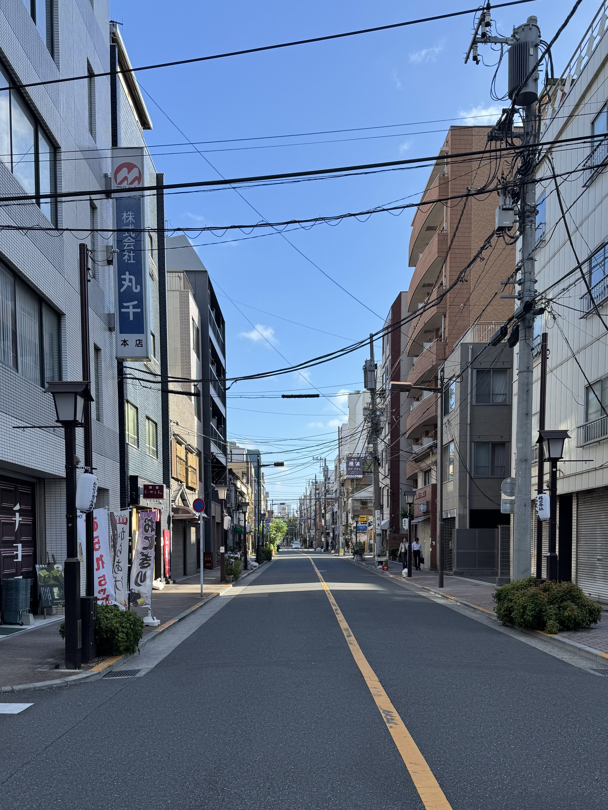
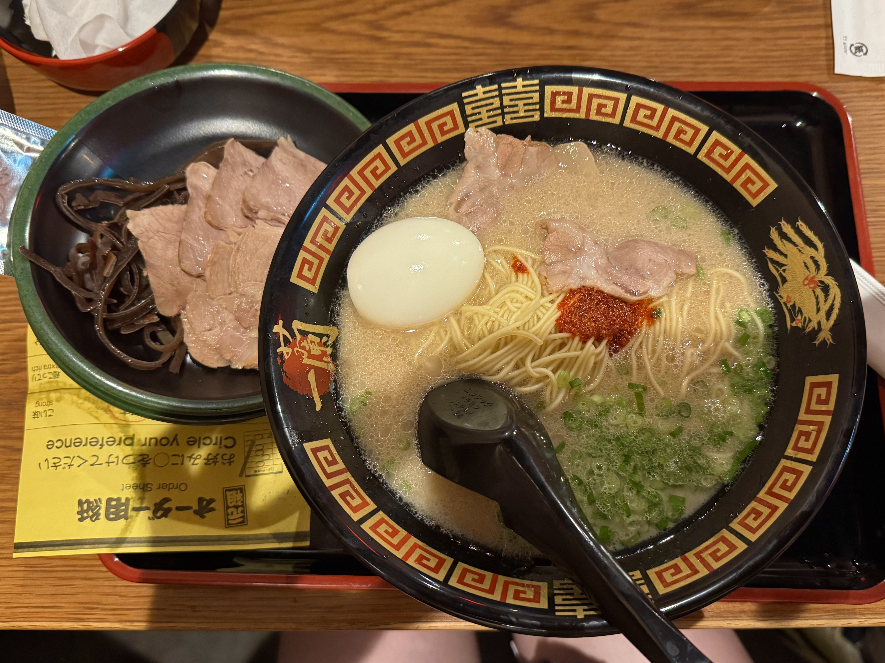
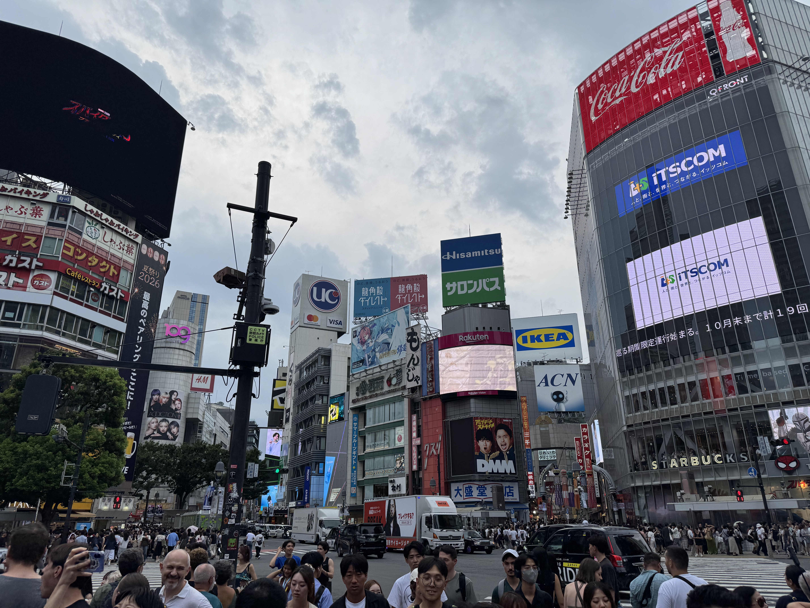
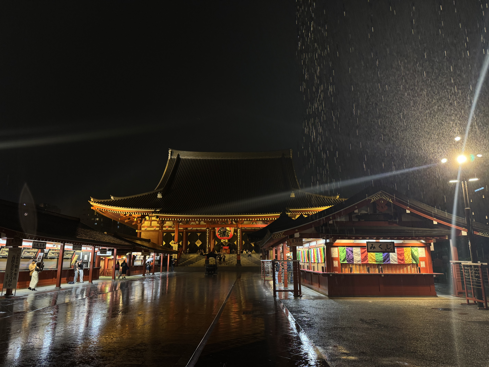
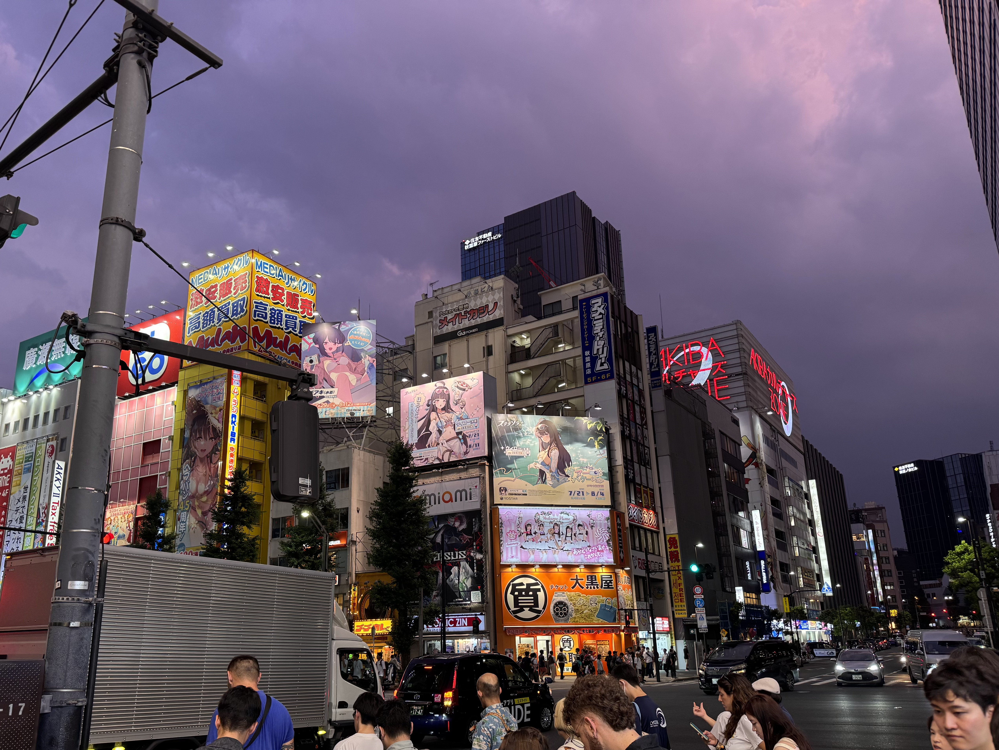

Токио
Токио - столица Японии и один из крупнейших городов мира. Это современный мегаполис, в котором небоскрёбы и высокие технологии сочетаются с древними храмами, садами и историческими районами
Навигация по странице
Раздел 1. Достопримечательности Токио
В Токио находится множество известных достопримечательностей, которые вы точно видели на картинках. Среди них современные башни и старые храмы, оживлённые районы и тихие улочки.
Основные достопримечательности
- Токийская башня
- Императорский дворец
- Район Сибуя
- Храм Сэнсо-дзи
- Район Синдзюку
Известные районы Токио
- Сибуя
- Синдзюку
- Гиндза
- Асакуса
- Акихабара
Что можно увидеть в разных районах
-
Сибуя
- Самый загруженный в мире перекрёсток
- Статуя Хатико
- Японские гоночные машины
-
Асакуса
- Храм Сэнсо-дзи
- Ворота Каминаримон
- Традиционные магазины
-
Акихабара
- Магазины электроники
- Магазины аниме и манги
- Многоэтажные игровые центры

Фотография Токио
Нажмите на миниатюру, чтобы открыть изображение в большом размере 600×400 пикселей.

Миниатюра является графической гиперссылкой на изображение большого размера.
К началуРаздел 2. Кухня Токио
Токио является одним из главных кулинарных центров Японии. Здесь можно попробовать как традиционные японские блюда, так и современные варианты японской кухни.
Популярные блюда
- Суши
- Рамен ресторане ICHIRAN
- Вагю
- Свинина в кляре
- Воздушные десерты

Популярные места Токио
В таблице представлены некоторые популярные туристические места Токио.
| Место | Описание | Изображение | Подробнее |
|---|---|---|---|
| Сибуя | Один из самых известных и оживлённых районов Токио. Район известен своим большим пешеходным перекрёстком. |
 |
Ссылка на google maps |
| Сэнсо-дзи | Один из наиболее известных буддийских храмов Токио, расположенный в районе Асакуса. |
 |
Ссылка на google maps |
| Акихабара | Известный район, являющийся главным мировым центром аниме-культуры, видеоигр и электронники. |
 |
Ссылка на google maps |
К началу